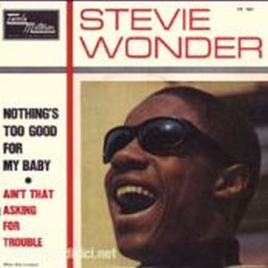
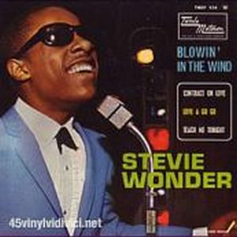
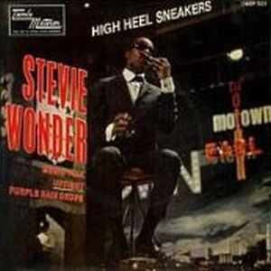
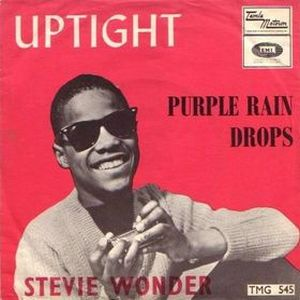

Stevie Wonder, ya adolescente, estaba ansioso por mostrar algo más que canciones de amor, por lo que se arriesga y atreve con canciones reivindicativas como "Blowin' in the Wind" de Bob Dylan y composiciones tan potentes como "Nothing's too good for my baby" o "Up-tight", donde temas compuestos por Stevie empezaban a sobresalir, despuntándose de los anteriores álbumes del estilo de Ray Charles. Esto permitió demostrar las cualidades vocales propias de Stevie, aupándole a la categoría de estrella.
Recuperó la canción "Contract On Love" perteneciente al álbum Workout Stevie, Workout que quedó en estado de invernación.



